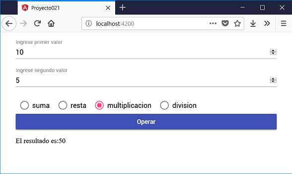

La etiqueta mat-radio-button provee la misma funcionalidad de la etiqueta nativa de HTML <input type="radio"> pero con las ventajas de estilos y animaciones de Material Design.
Para agrupar un conjunto de mat-radio-button se utiliza la etiqueta mat-radio-group.
Definir un formulario web que permita cargar dos valores numéricos y mediante 4 'mat-radio-button' permitir indicar si queremos sumar, restar, multiplicar o dividir los valores ingresados. Efectuar la operación al presionar un botón.
Crearemos primero el proyecto
ng new proyecto021
Procedemos a instalar todas las dependencias de Angular Material ayudados por Angular CLI mediante el comando 'add':
ng add @angular/material
Modificamos el archivo 'app.module.ts' donde debemos importar los módulos de Angular Material que requiere nuestro proyecto:
import { BrowserModule } from '@angular/platform-browser';
import { NgModule } from '@angular/core';
import { AppComponent } from './app.component';
import { BrowserAnimationsModule } from '@angular/platform-browser/animations';
import { FormsModule } from '@angular/forms';
import { MatInputModule } from '@angular/material/input';
import { MatButtonModule } from '@angular/material/button';
import { MatRadioModule } from '@angular/material/radio';
import {MatFormFieldModule} from '@angular/material/form-field';
@NgModule({
declarations: [
AppComponent
],
imports: [
BrowserModule,
BrowserAnimationsModule,
FormsModule,
MatInputModule,
MatButtonModule,
MatRadioModule,
MatFormFieldModule
],
providers: [],
bootstrap: [AppComponent]
})
export class AppModule { }
Modificamos el archivo 'app.component.ts' con la lógica de nuestra componente que permita operar los dos valores ingresados dependiendo de la selección del mat-radio-button:
import { Component } from '@angular/core';
@Component({
selector: 'app-root',
templateUrl: './app.component.html',
styleUrls: ['./app.component.css']
})
export class AppComponent {
valor1!:number;
valor2!:number;
resultado!:number;
operacionSeleccionada: string = 'suma';
tipoOperaciones = [
'suma',
'resta',
'multiplicacion',
'division',
];
operar() {
switch (this.operacionSeleccionada) {
case 'suma' : this.resultado = this.valor1 + this.valor2;
break;
case 'resta' : this.resultado = this.valor1 - this.valor2;
break;
case 'multiplicacion' : this.resultado = this.valor1 * this.valor2;
break;
case 'division' : this.resultado = this.valor1 / this.valor2;
break;
}
}
}
Cuando definimos la propiedad con el caracter '!', estamos utilizando 'Definite assignment assertion', luego la propiedad se puede inicializar indirectamente con el valor que se carga en el control de entrada, inicialmente se encuentra 'undefined'.
valor1!:number;
Estamos diciendo a TypeScript con el operador '!' que la propiedad se inicializará en un momento posterior, antes que la usemos, queda en nuestra responsabilidad como programador que sea iniciada, antes que hagamos su consumo
Sino podemos hacer como en el concepto anterior y asignarle un valor inicial a la propiedad:
valor1:number=0;
Codificamos la interfaz visual en el archivo 'app.component.html':
<div class="contenedor">
<mat-form-field>
<input matInput [(ngModel)]="valor1" type="number" placeholder="Ingrese primer valor">
</mat-form-field>
<mat-form-field>
<input matInput [(ngModel)]="valor2" type="number" placeholder="Ingrese segundo valor">
</mat-form-field>
<mat-radio-group name="opciones" [(ngModel)]="operacionSeleccionada">
<mat-radio-button *ngFor="let op of tipoOperaciones" name="opciones" [value]="op" style="margin: 10px">
{{op}}
</mat-radio-button>
</mat-radio-group>
<button mat-raised-button color="primary" (click)="operar()">Operar</button>
<p>El resultado es:{{resultado}}</p>
</div>
El último archivo que debemos codificar es la hoja de estilo de la componente que se encuentra en 'app.component.css':
.contenedor {
display: flex;
flex-direction: column;
margin:1rem auto;
max-width: 600px;
}
Si ejecutamos ahora la aplicación podemos comprobar cual es la estética de la componente mat-radio-button:
Podemos probar esta aplicación en la web aquí.
En el archivo 'app.component.html' definimos el selector 'mat-radio-group' y dentro del mismo los cuatro 'mat-radio-button' que los generamos mediante la directiva ngFor por facilidad:
<mat-radio-group name="opciones" [(ngModel)]="operacionSeleccionada">
<mat-radio-button *ngFor="let op of tipoOperaciones" name="opciones" [value]="op" style="margin: 10px">
{{op}}
</mat-radio-button>
</mat-radio-group>
En el archivo 'app.component.ts' definimos un atributo donde se almacena cual opción se encuentra seleccionada y un vector con todas las opciones de los mat-radio-button:
operacionSeleccionada: string = 'suma';
tipoOperaciones = [
'suma',
'resta',
'multiplicacion',
'division',
];
En el archivo 'app.module.ts' importamos todos los módulos necesarios para trabajar con este formulario de Material:
import { MatInputModule } from '@angular/material/input';
import { MatButtonModule } from '@angular/material/button';
import { MatRadioModule } from '@angular/material/radio';
import { MatFormFieldModule } from '@angular/material/form-field';